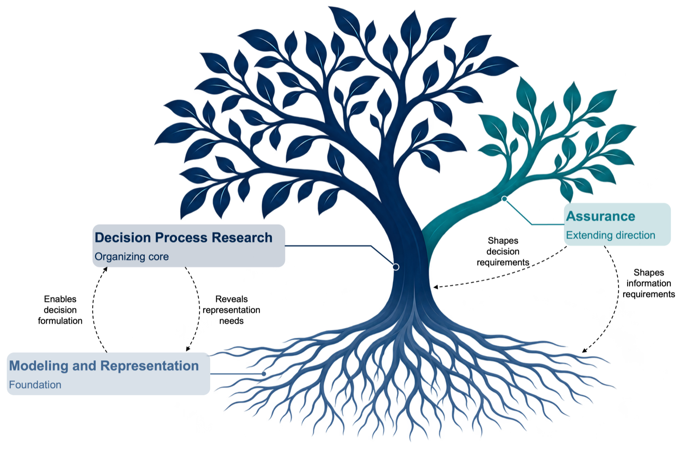

Research Program
Program Center
My research examines decision processes in relation to the operational conditions that shape available actions and the consequences of choosing among them. I investigate how states, constraints, interactions, and uncertainty affect decision behavior, how decisions within a system contribute to its overall behavior, and how adaptation and feedback change these relationships over time.
The aim is to make these relationships explicit and analyzable, advancing scientific understanding alongside the formulation, design, and evaluation of decision processes grounded in the operational systems in which they function.
Research Architecture
My research program is organized around three interacting functions with distinct roles.

Decision Process Research
Decision Process Research forms the organizing core. It examines how decisions are formulated, designed, executed, adapted, coordinated, and evaluated in relation to operational conditions, and how decision behavior produces local and system-level consequences.
Modeling and Representation
Modeling and Representation provides the foundation by making operational states, constraints, dynamics, uncertainty, and decision spaces explicit and analyzable. These representations support decision formulation, experimentation, and evaluation.
Assurance
Assurance extends the program toward requirements beyond effectiveness and efficiency, such as privacy. It investigates how decision processes can satisfy these requirements and what properties, mechanisms, and evidence are needed to substantiate their satisfaction in defined decision problems.
These functions inform one another iteratively. Representations can enable decision formulation, while decision behavior can reveal new representation needs. Assurance considerations can reshape both decision processes and the information needed to evaluate them. The functions have different roles and levels of maturity, and an individual research effort may engage them with different emphases.
Enduring Vision
My vision is to develop a cumulative science of decision processes that explains their behavior and consequences in complex operational systems and provides a scientific foundation for their design and evaluation.